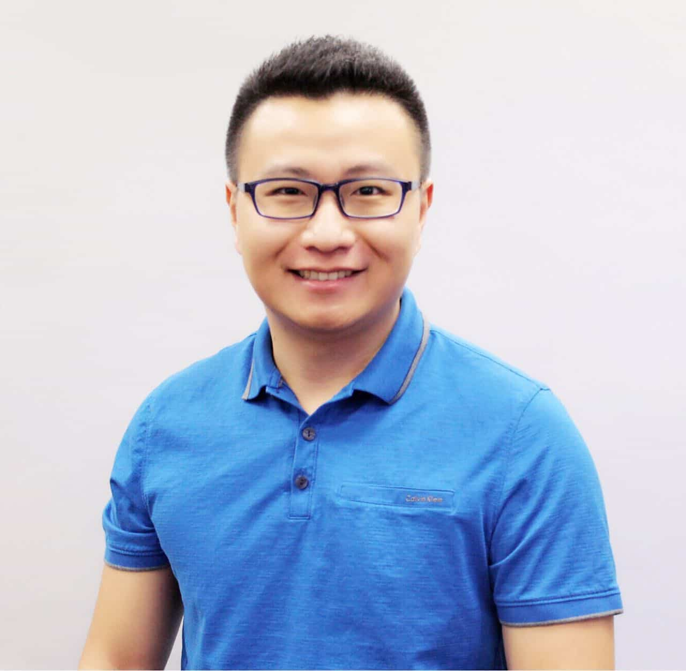

Yanzhi “Aaron” Dou, 窦彦智
|  | Research Scientist at Facebook Contact Info: |
Latest News
[02/2018] Huh, thinking of using a less formal and more interactive template for personal webpage.
[02/2018] Started the role of Research Scientist at Facebook headquarter in Menlo Park, CA. Excited!
[11/2017] For graduation trip, went to Thailand to learn Muay Thai on Phuket island. Visited Seoul for a couple of days before returning to US.
[11/2017] Successfully defended my dissertation! Will join Facebook in Jan 2018. Cheers!
[04/2017] Will start a summer internship in Facebook, Menlo Park CA from May 15. Let's meet up in Silicon Valley!
[03/2017] Our paper Preserving Incumbent Users’ Privacy in Exclusion-Zone-Based Spectrum Access Systems got accepted to IEEE ICDCS 2017.
[12/2016] Our paper A Practical GPS Location Spoofing Attack in Road Navigation Scenario got accepted to ACM HotMobile 2017.
[11/2016] Our paper of P2-SAS got accepted to IEEE JSAC Special Issue on Spectrum Sharing and Aggregation for Future Wireless Networks.
[09/2016] Passed the Ph.D. Preliminary Exam!
[07/2016] Our poster Preserving incumbent users’ privacy in exclusion-zone-based spectrum access systems got accepted to ACM MobiCom 2016.
[04/2016] Our paper P2-SAS: Preserving Users’ Privacy in Centralized Dynamic Spectrum Access Systems got accepted to ACM MobiHoc 2016! AR = 35/187 = 18.70%.
[03/2016] Our poster Preserving Incumbent Users’ Privacy in Server-Driven Dynamic Spectrum Access Systems got accepted to IEEE ICDCS 2016.
[03/2016] Our proposal “Privacy-Preserving SAS” got accepted to IEEE INFOCOM 2016 Innovation Challenge Panel, which called for business-worthy ideas in networking and communication.
[11/2015] Our paper Incentivizing Spectrum Sensing in Database-Driven Dynamic Spectrum Sharing got accepted to IEEE INFOCOM 2016.
[09/2015] Our proposal Preserving User Privacy in Server-driven Dynamic Spectrum Access System got approved by NSF. We won $449,991.00.
[06/2015] Our poster Privacy-Preserving Server-driven Dynamic Spectrum Access System got accepted to ACM Mobicom 2015.
[03/2015] Our poster Location Verification and Recovery for Mobile In-Vehicle Applications got accepted to ACM Mobisys 2015.
[11/2014] My first work in Ph.D. career got accepted to IEEE INFOCOM 2015! Cheers!
{kind=link}
Research Keywords
Wireless networking, mobile systems, network security, privacy.
A Short Vita
I am currently a fifth-year Ph.D. student of Computer Engineering in Virginia Tech. I work with Professor Yaling Yang in SHINE group. I am also a member of CESCA and Wireless@VT. I'm lucky to have Yaling Yang, Y. Thomas Hou (IEEE Fellow), Kui Ren (IEEE Fellow), Wenjing Lou (IEEE Fellow), and Patrick Schaumont on my Ph.D. Advisory Committee.
Before this, I got my B.E. in Electronic Engineering from Tsinghua University in 2013. I worked as a research assistant in 4Clab with Professor Wei Chen and Dr. Bo Bai.
I am a regular donator to the Wikimedia Foundation.
Education
Ph.D., Electrical and Computer Engineering, Virginia Tech, Blacksburg, Virginia, U.S.A., 08/2013-11/2017
M.S., Electrical and Computer Engineering, Virginia Tech, Blacksburg, Virginia, U.S.A., 08/2013-12/2016
B.E., Electronic and Computer Engineering, Tsinghua University, Beijing, China, 08/2009-06/2013
Academic Talent Program (Physics and Mathematics) in School of Sciences, Tsinghua University, Beijing, China, 08/2009-06/2011
Funding
Preserving User Privacy in Server-driven Dynamic Spectrum Access System.
National Science Foundation (NSF) 1547366, $750k
Co-Investigators: Yaling Yang and Yanzhi Dou (VT); Kui Ren (SUNY, Buffalo)
Awards and Grants
[2017] Outstanding student award from CESCA.
[2016] Selected participant of ACM Student Research Competition(SRC).
[2016] ACM MobiCom student travel grant.
[2016] ACM MobiHoc student travel grant.
[2016] IEEE ICDCS student travel grant.
[2015] ACM Mobicom SRC travel grant.
[2015] IEEE INFOCOM student travel grant.
{kind=link}
{kind=link}
Community Service
TPC: WCNC 2018
Reviewer: IEEE INFOCOM 2017, 2016, 2015
Reviewer: IEEE Systems Journal (IF:2)
Member: CESCA Student Task Force 2016, 2015, 2014
Hobbies
Billiards (3rd place in 2014 VT-ACSS single 8-ball tournament, 2nd place in 2016 VT-ACSS team 8-ball tournament)
Bodybuilding
Classical music
{kind=link}